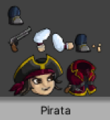
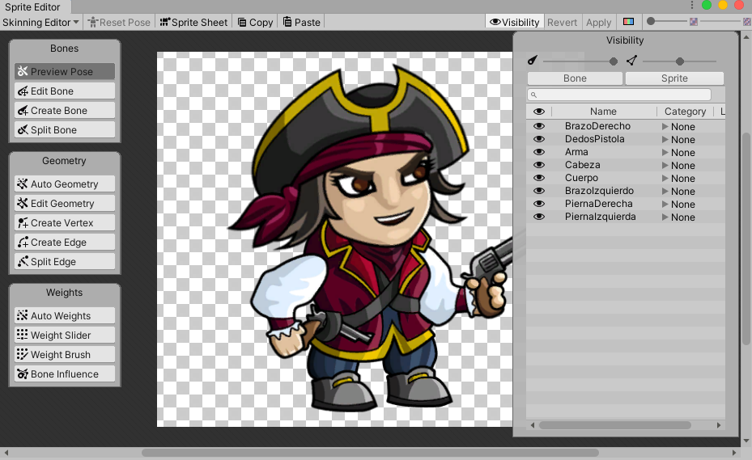
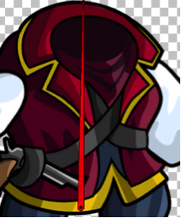
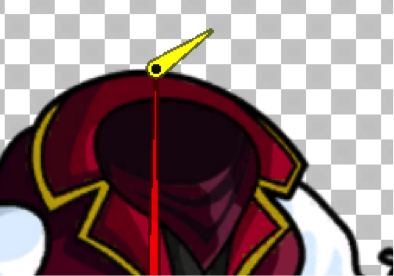
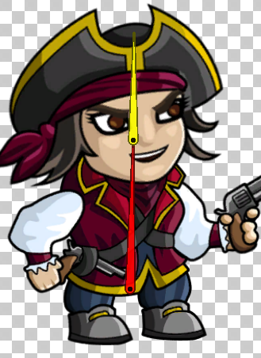
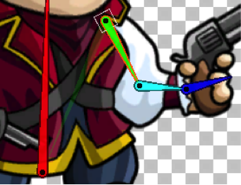

En este tema, aprenderemos a crear un esqueleto completo con los huesos necesarios para su articulación y veremos como jerarquizarlos.
Vamos a crear el esqueleto del personaje. Para ello, seleccionaremos a nuestro personaje de la carpeta de Sprites y en el Inspector pulsaremos el botón de Sprite Editor. Lo primero que vemos es el Sprite Sheet que se creó automáticamente con el Package 2D PSD Importer.

Seleccionaremos Sprite Editor y nos aparecerá un desplegable donde seleccionaremos Skinning Editor. En la parte superior a la derecha tenemos la opción Visibility dividida en dos partes, Bone y Sprite.

Si seleccionamos Bone de momento no nos aparece nada ya que aquí aparecerán los huesos que creemos,
pero si seleccionamos Sprite nos aparecerán las distintas partes del cuerpo del personaje. Si hay
alguna parte que no queramos que se vea, podemos ocultarla.
En Visibility tenemos también dos deslizadores que tendrán su utilidad más adelante:
• Uno para ver la visibilidad de los huesos.
• Otro para ver la visibilidad de los Sprites (mallas).
En la parte de la izquierda, nos aparecen tres zonas diferenciadas, que iremos viendo poco a poco:
• Bones
• Geometry
• Weights
Según hemos visto en el punto anterior, en la parte de la izquierda del Sprite Editor tenemos una zona Bones (Huesos) donde daremos forma a nuestro esqueleto. Dentro de esta zona tenemos cuatro opciones.
Esta opción es la que usaremos para crear los huesos. Para crear un hueso hacemos lo siguiente:
Acercamos el puntero a nuestro personaje y aparecerá un punto rojo. Donde pinchemos, empezará el hueso y será
el centro de la rotación de nuestra articulación. Movemos el ratón hasta donde queramos que termine el hueso y
volvemos a pinchar para crearlo.
Empezaremos por el hueso principal que será el del cuerpo. Pinchamos en la parte de abajo (que será nuestro
eje de rotación) y subiremos el ratón hasta el extremo superior, dando click para finalizar.

A medida que vayamos creando huesos, aparecerán en la parte Visibility de la derecha de la pantalla
dentro de la zona Bone. Lo ideal sería ir cambiando el nombre de los huesos según los vayamos creando
para saber siempre el hueso que estamos tocando.
Si sigo arrastrando el ratón desde donde terminó el último hueso creado, empezaremos otro hueso que dependerá
del anterior.

Podríamos crear el hueso de la cabeza unido y dependiente del hueso del cuerpo.

Al crear los huesos dependientes, podemos observar como en el menú Visibility el hueso del cuerpo tiene al hueso de la cabeza como dependiente o hijo.
Cuando no queramos poner más huesos (dependientes o no) pulsamos el botón derecho del ratón o la tecla escape.
Si los puntos de rotación o el hueso en sí no queda tal y como nosotros queremos, pincharemos en la opción Edit Bone y podremos modificar cada uno de los huesos arrastandolos a su posicon correcta o corrigiendo su tamaño.
Una vez que tenemos los huesos del cuerpo y la cabeza, continuamos con los brazos, que como queremos que al
moverse el cuerpo se mueva tamben el brazo, los haremos hijos de éste.
Empiezo con el brazo izquierdo. Selecciono el punto de rotación del cuerpo y lo arrastraremos hasta donde
quiero que sea el punto de rotación del brazo (hacia el hombro) y desde ahí creamos el hueso hasta el codo.
Después haremos otro hueso dependiente del anterior hasta la muñeca y por último crearemos el de la mano.

Si nos molestan el resto de partes del cuerpo para hacer los huesos, podemos ponerlos invisibles en la opción de Visibility donde aparece un ojo.
• Hacemos lo mismo con el brazo derecho.

Cada vez que mueva el cuerpo también se van a mover los Piernas: • Hacemos primero una pierna y luego la otra. He escondido el Sprite del Cuerpo para ajustarlo mejor.
Dentro de Visibility en la opción de Bone también podemos reorganizar los Huesos o los Sprites arrastrándolos a lo largo de la lista (por si nos hemos confundido al asignarle a un padre…) y alternar la visibilidad de los huesos. Después de hacer todos los huesos y haberlos renombrado se nos quedara de esta forma:
Para añadir otra articulación donde la necesitemos.
y damos CTRL+Z para deshacer y que vuelva a su sitio. Si vemos que hemos hecho muchos cambios podemos pulsar el botón Reset Pose y hará un Reset para que los huesos se pongan en el estado en el que se crearon. • Si giro desde la mano no cambia ningún hueso. Porque no tiene hijos asociados.
• Si giro el del cuerpo se moverá todo.
• Probarlo con los brazos y los pies. • Si selecciono el punto de rotación del Cuerpo y lo muevo el Cuerpo se mueven las piernas porque son hijos del Cuerpo pero NO quiero que se muevan así.
Lo que queremos es que se mueva el Cuerpo pero las Piernas que NO se muevan o que cuando rotamos el cuerpo que NO roten las piernas. Lo que haremos es crear un Hueso Principal que será hijo el Cuerpo y cada Pierna: • Pulsamos Create Bone en la parte de debajo de nuestro personaje y nos aparece un punto. Cuidado de no tener seleccionado ningún hueso ya que lo haría hijo de ese hueso. Para quitar esa selección click derecho.
• Se suele poner ese punto en el centro de los Pies pero para que sea más fácil de seleccionar lo arrastramos un poco hacia abajo.
Este hueso lo necesitamos cuando queramos mover todos los huesos del personaje a la vez. Lo llamaremos Principal. • Ahora tenemos que hacer que las piernas sean hijos del hueso Principal. Así que lo arrastramos al principio y ponemos al resto como hijos.
Para borrar un hueso nos ponemos en su rotación y con la tecla SUPRIMIR.
• Acordaros que las Piernas tienen que ser hijos del Principal así que habrá que arrastrarlos. Puedo seleccionar las Piernas con el SHIFT y moverlas las dos a la vez. Así Principal tendrá 3 hijos. Probarlo: • Si muevo el Cuerpo se moverla con la cabeza y los brazos o también puedo pinchar en la Rotación y puedo simular subiendo y bajando que está respirando. Independiente de las piernas. • Y si muevo solo las piernas no se moverá el cuerpo. • Lo interesante es si muevo el Principal se moverá todo.
Faltaría ver de los Bone la Depth (Profundidad). Esto es para cuando un Sprite necesite pasar por encima o por debajo de el mismo. El orden en el que se dibujaran los Sprites vendrá definido por el orden de las Capas del archivo .psd. Esto ahora no valdrá para mucho: • Si se pone un valor es más alto se mostrara por encima de otros Sprites que tengan una profundidad más baja. • Si no lo hemos puesto bien en el .psd lo podremos cambiar aquí. Quedaría tal que así:
Para que se quede todo bien grabado tendríamos que dar a Apply para aplicar los cambios que hemos hecho.
Si pinchamos sobre cada uno de los huesos, podemos ver como quedarían las distintas articulaciones.
Volver al índice